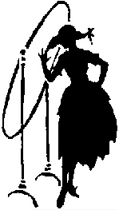

Archives, or, What Was New at VintageSewing.info
April 27, 2008
If you are interested in our day-to-day site-related activities, we've started a progress blog. There is a learning curved involved with RSS and CSS and PHP and all the other acronyms, so please be patient while we sort it all out.
April 26, 2008
We're ba-a-a-ack! It has been a very intense three years in the "real" world. Things appear to be settling into a stable pattern and I will resume adding new works. (There was a major promotion, change in marital status, an organ removal and a chronic health condition, first-time home ownership of a broken-down fixer-upper, and the adoption of a rescue dog, to name a few happenings.)
And then there are the pirates. Not the hot media darlings of 2006; the ones who subvert the purpose of this site. If you look at the bottom of each page, you will notice something new:

You see, there are thieves who have stolen our content, burned it onto disks and have been auctioning it off (without attribution, to boot) on eBay. One of the thieves desisted (after sending an abusive email in response to our cease-and-desist notice). The other thief, in Australia, seems not to care. But thank you to those of you who contacted me to let me know this was going on. I don't have the resources to spend on shutting down someone halfway around the world; however, if you know this person and can bring personal pressure on them to cease and desist, it would certainly bring a smile to my face.
There is a misperception that because the original copy of the works published on this site are in the public domain that this web site's renderings of them are fair game for anyone to use in any manner. The original works are in the public domain; the VintageSewing.info version of them is copyright by the Vintage Sewing Reference Library, Inc. We exist to freely share the information—emphasis on the FREE. As the Creative Commons license explains in clear, human, terms:
You are free:
-
To Share — to copy, distribute, display, and perform the work
Under the following conditions:
-
Attribution. You must attribute the work in the manner specified by the author or licensor (but not in any way that suggests that they endorse you or your use of the work).
-
Noncommercial. You may not use this work for commercial purposes.
-
No Derivative Works. You may not alter, transform, or build upon this work.
Can I make it any more clear? You do NOT have permission to repackage the information on this site to sell it, or to charge admission or in any way impede free access to it. This information is to be FREELY shared. I encourage you to share it; you need only include a link or text reference back to this site so people can find their way here and see what other information we have. If you choose to copy entire passages or works to your own site, you must include a clearly visible attribution on each page (for example, the original web version of this work can be found at VintageSewing.info). You can use the images for noncommercial purposes; if used on web sites, include an attribution and link to us (for example, image courtesy of VintageSewing.info). You may use the images or information for your presentations and include them in your local sewing guild's newsletters, again, with an attribution. If you want to use any of the images on items that will be sold, you need explicit permission (contact me).
If this seems restrictive to you, you are free to acquire an original print version of the work or image, scan it, OCR it, format and code it, clean up the images, and do whatever you would like. If you use anything published by Vintage Sewing Reference Library, Inc., it must be under the terms stated herein.
Back to the topic of new works being added, I would like to let you know that drafting manuals are very dreary to proofread. They are a delight to work with in the real world, allowing you to save a bundle on vintage patterns and to make recreations that fit your own modern body, but they are a bear to get from paper to web form. I am actively proofreading the unending M. Rohr's 1957 Pattern Drafting & Grading, Women's and Misses' Garment Design, inluding junior's, sub-teens, teens, and half sizes, but it's slow going.
2005 to 2007
Life happens. Vintagesewing.info remains live but no new works are added.
September 3, 2004
We have reconfigured the popup windows and made the page width a little narrower so that large blocks of text will be easier to read. Whew! Now we can move forward with adding new works to the site.
July 14, 2004
The new Support page is up; we can now accept monetary donations! The state of California has granted our tax-exempt status, and we hope the IRS won't be far behind.
We are continuing the next phase of our accessibility compliance and reconfiguring the pop-up windows. We're up to the mid-1920's.
It was brought to our attention that we somehow neglected to add the links to the Table of Contents for How to Make Hats. We've remedied that.
June 21, 2004
The new search engine is configured and working! If you have any difficulties with it, please let us know.
June 18, 2004
In addition to Principles of Tailoring (1931), we've added four millinery books: How to Make Hats (1952), Millinery Processes (1930), Millinery (1925), and Millinery (1922).
To make it easier to browse, we've reorganized the Candidates page to sort by category instead of decade.
June 12, 2004
We outgrew our old host (they shut us down for four days last month for exceeding our bandwidth—and here we thought that in the professional word you contact your customer if there is a problem), so we have switched hosts. If you notice any broken links or missing images or pages, please let us know so we can fix it promptly.
We are still settling in with the new host, so the search engine is temporarily inactive. Once we untangle our database snarl, we should have the new-and-improved version up and running before too long.
April 25, 2004
It has been a very busy couple of months and we apologize for the delay in our publishing schedule. Last month we submitted to the state of California our Articles of Incorporation as a nonprofit public benefit corporation and we are jumping through the appropriate hoops of red tape so we can apply for tax-exempt 501(c)3 status with the IRS and accept donations to help this site continue to grow. We explain our reasons for incorporating on the Corporate FAQ page.
In the midst of completing reams of forms, researching obscure state regulations about charitable solicitations, and a minor site redesign to reflect our promotion from hobby to separate legal entity, we have managed to complete the coding of F. R. Morris' Ladies' Garment Cutting and Making (early 1940's). This book is an excellent followup to Peppin's Modern Pattern Design (1942), exploring the creating of many more garments (including undergarments, evening gowns, and coats and capes). There are also chapters on pattern grading, making up the garments, tailoring, how to "drape" a pattern, and pattern grading for the wholesale trade. The author explores the reasoning behind design decisions, and has a few sharp words to direct to the "cutters" of the industry.
To help people browse the site, we've added a Category page. To let you know what books people have been voting for, we've added a top-five list on the main page. And in response to repeated requests for more millinery books and anything from the 19th century, we have a line on acquiring several such books and will add them to the Candidates page as we process them.
{kind=link}
January 25, 2004
You've got to love this new OCR software (ABBYY FineReader 6.0 Professional) which has exponentially increased my output! Now completed are School Needlework (1893) and Laundering and Dry Cleaning (1931). In answer to some repeated requests, we will be putting up a trio of pattern drafting works next, starting with the hard-to-find Ladies' Garment Cutting and Making (3rd ed., early 1940's), followed by the Rohr's Pattern Drafting & Grading, Women's and Misses' Garment Design (1957) and the Nu-Way Course in Pattern-Drafting (1928).
The Candidates page has been updated to include thumbnails of the covers. (And for those of you anxious to see some works from the 19th century, I am exploring ways to use digital photography instead of flatbed scanning so I won't damage the fragile older books available to me from the University's library.)
January 18, 2004
Those of you who have been requesting books on millinery and glove making will be happy to see that both How to Make Gloves (1950) and Nu-Way Course in Millinery and Hat Design (1928) have been completed. Am now working on School Needlework (1893) which will be followed by Laundering and Dry Cleaning (1931). Please continue to visit the Candidates page (updated whenever I acquire new books) and submit your requests so I can try to publish the more popular works first.
January 4, 2004
Modern Pattern Design (1942) has been completed! Beginning work on How to Make Gloves (1950).
January 1, 2004
Site redesigned to bring it into compliance with the W3 Web Content Accessibility Guidelines and the U.S. Federal Government Section 508 Guidelines.
July 3, 2003
The 1936 Home Sewing Course uploaded. New notification mailing list activated - you can now use an online form to subscribe or unsubscribe.
June 12, 2003
Email reconfigured. Now able to respond! If you have tried to contact us and did not receive a response (and are still interested) please try again.
April 7, 2002
The 1917 American Dressmaking Step by Step uploaded.
March 20, 2002
The 1930 Paris Frocks at Home uploaded.
March 8, 2002
New top-level domain identification! We have changed from .com to the more appropriate descriptive of .info.
February 13, 2002
Site redesign complete. Hope you enjoy the sleek look.
January 21, 2002
Working on the redesign and easier navigation for the 1926 Nu–Way Fashionable Clothesmaking. Also working on coding Butterick's 1930 work, Paris Frocks at Home, and Lydia Trattles Coates' 1917 epic, American Dressmaking Step by Step. Peruse the candidates' page and cast your vote for the next work to be included. Eventually, assuming the copyright status is clear, all the candidate works will be published.